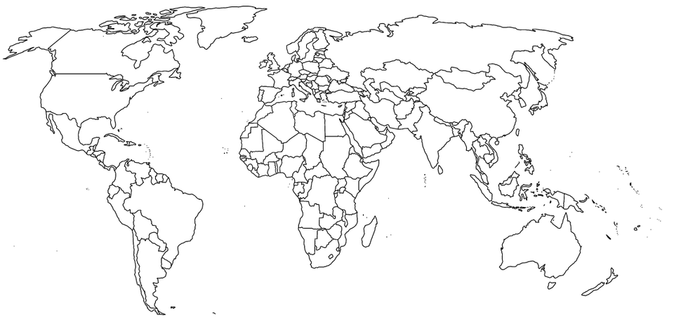

Tältä sivulta löydät ajantasaiset tiedot maailman itsenäisistä valtioista. Voit tarkastella maiden lippuja, väkilukuja, pääkaupunkeja sekä maanosia. Voit myös lajitella maat nousevaan tai laskevaan järjestykseen sarakkeen perusteella tai käyttää hakutoimintoa löytääksesi tietyn maan nopeasti. Hakukriteeriksi käy nimi, pääkaupunki tai maanosa.

Antony2001 Greece, CC BY-SA 4.0| Maa | Lippu | Väkiluku | Pääkaupunki | Maanosa(t) |
|---|